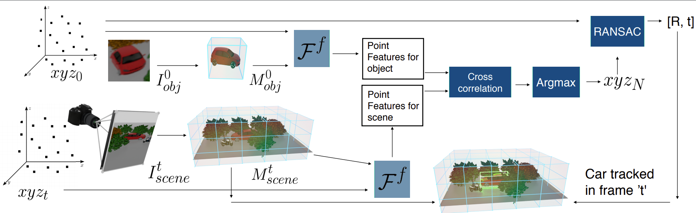
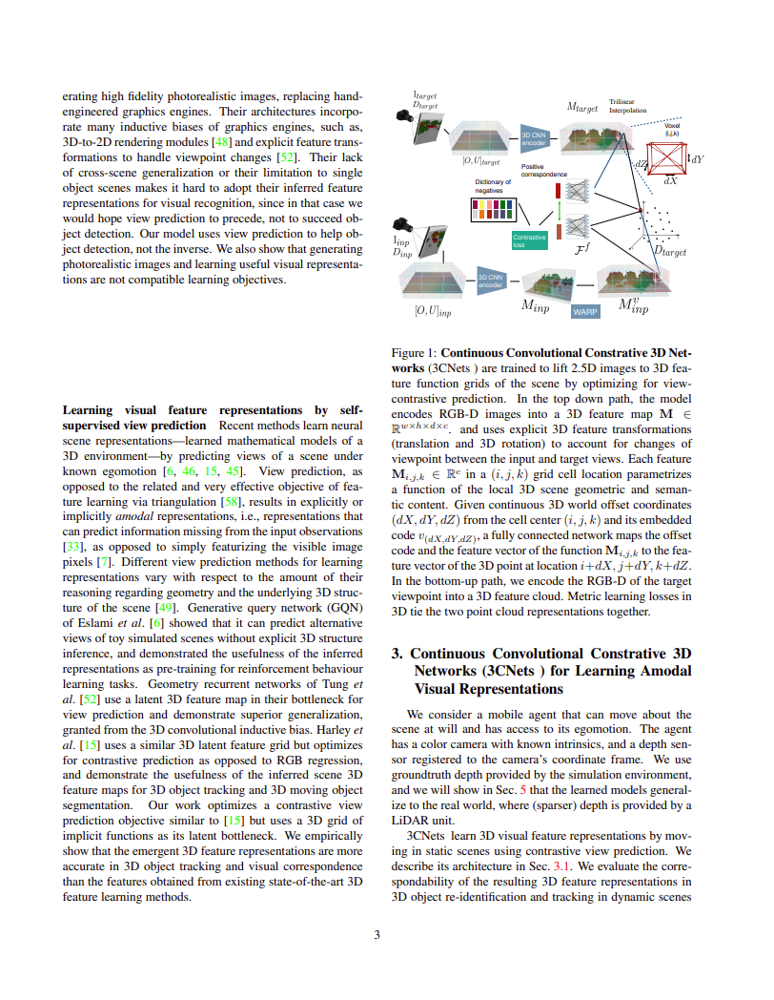

Continuous Contrastive 3D Scene Representations (CVPR 2021)
Abstract
This paper explores self-supervised learning of amodal 3D feature representations from RGB and RGB-D posed images and videos, agnostic to object and scene semantic content, and evaluates the resulting scene representations in the downstream tasks of visual correspondence, object tracking, and object detection. The model infers a latent 3D representation of the scene in the form of a 3D grid of functions, where each function maps continuous world 3D point displacements from the grid cell centroid to the corresponding 3D point feature vector. The model is trained for contrastive view prediction by rendering 3D feature clouds in queried viewpoints and matching against the 3D feature point cloud predicted from the query view. Notably, the representation can be queried for any 3D locations, even those not visible from the input views. Our model brings together three powerful ideas of recent exciting research work: 3D feature grids as a neural bottleneck for view prediction, implicit functions for handling resolution limitations of 3D grids, and contrastive learning for unsupervised training of feature representations. We show the resulting 3D visual feature representations effectively scale across objects and scenes, imagine information occluded or missing from the input viewpoints, track objects over time, 3D align semantically related objects, improve 3D object detection, and outperform many existing 3D feature learning and view prediction state-of-the-art methods, that either are limited by 3D grid spatial resolution, do not attempt to build amodal 3D representations, or do not handle combinatorial scene variability due to their non-convolutional bottlenecks.
Overview of ts

Continuous Constrative 3D Networks are trained to lift 2.5D images to 3D feature function grids of the scene by optimizing for view-contrastive prediction. In the top down path, the model encodes RGB-D images into a 3D feature map and uses explicit 3D feature transformations (translation and 3D rotation) to account for changes of viewpoint between the input and target views. Each feature grid cell location parametrizes a function of the local 3D scene geometric and semantic content. Given continuous 3D world offset coordinates (dX,dY,dZ) from the cell center (i,j,k) and its embedded code v, a fully connected network maps the offset code and the feature vector of the grid cell i,j,k to the feature vector of the 3D point at location i+dX,j+dY,k+dZ. In the bottom-up path, we encode the RGB-D of the target viewpoint into a 3D feature cloud. Metric learning losses in 3D tie the two point cloud representations together.

Given the cropped RGB-D image of the object to track at t = 0, our model infers the 3D object feature map, and queries it using xyz_0, the point cloud of the object, to obtain object point features. Similarly, it obtains the point features of the entire scene at timestep t. Finally, it does cross correlation between these features to get xyz_N, where each ith point in xyz_N is the point from the scene whose feature matched best with the feature for ith point in xyz0$ We then apply RANSAC on xyz_0 and xyz_N to obtain the location of the car at timestep t.
Results

Continuous Contrastive 3D Scene Representations
Shamit Lal*, Mihir Prabhudesai*, Ishita Mediratta, Adam W Harley, Katerina Fragkiadaki
pdf preprint
BibTex
@manual{implicit,
title = "Continuous Contrastive 3D Scene Representations",
author = "Lal*, Shamit and Prabhudesai*, Mihir and Mediratta, Ishita and Harley, Adam W and Fragkiadaki, Katerina",
note = "\url{https://mihirp1998.github.io/project_pages/3cnets/implicitVoxel.pdf}",
year = "2020"
}
@manual{implicit,
title = "Continuous Contrastive 3D Scene Representations",
author = "Lal*, Shamit and Prabhudesai*, Mihir and Mediratta, Ishita and Harley, Adam W and Fragkiadaki, Katerina",
note = "\url{https://mihirp1998.github.io/project_pages/3cnets/implicitVoxel.pdf}",
year = "2020"
}